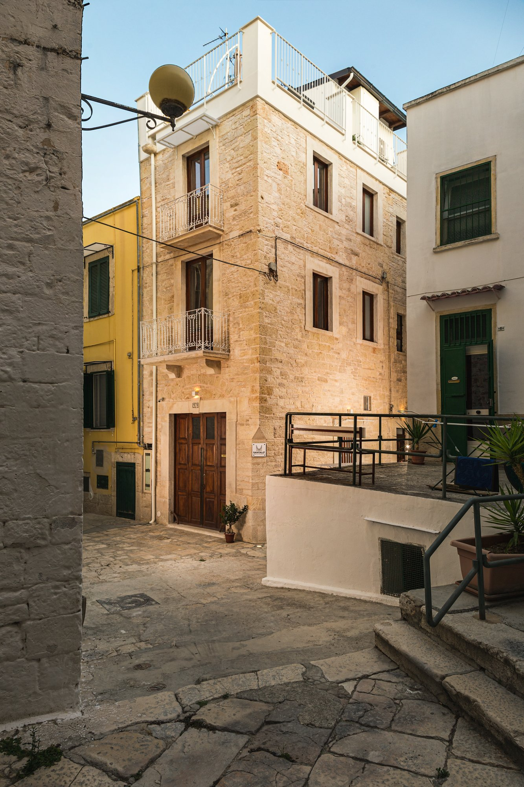
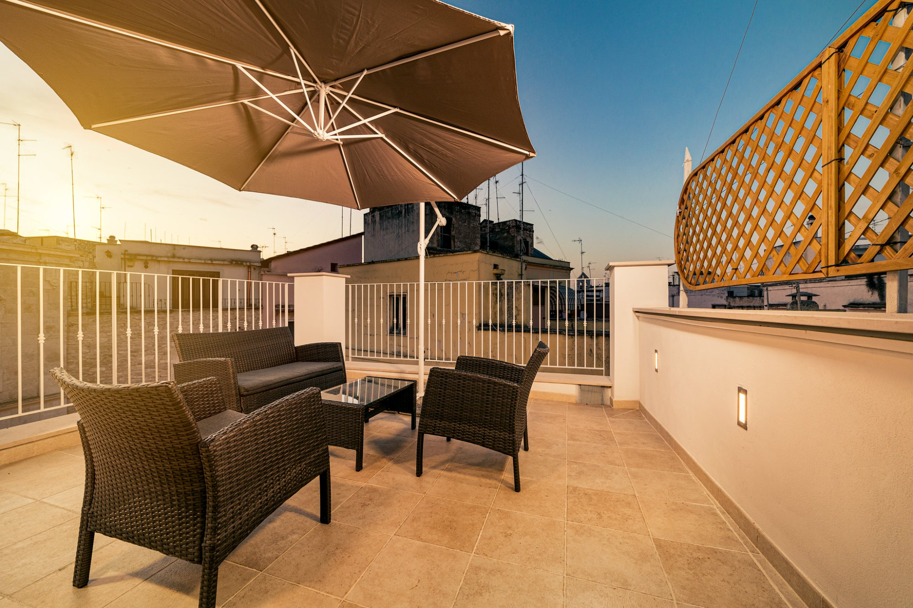
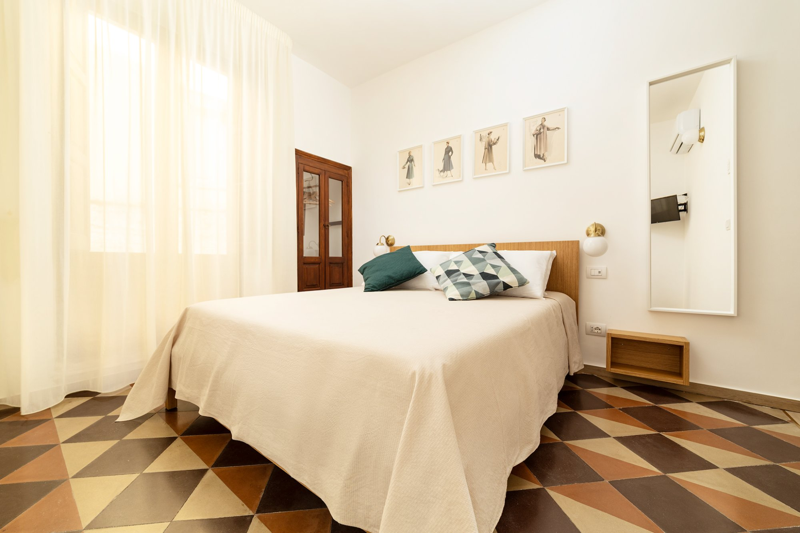
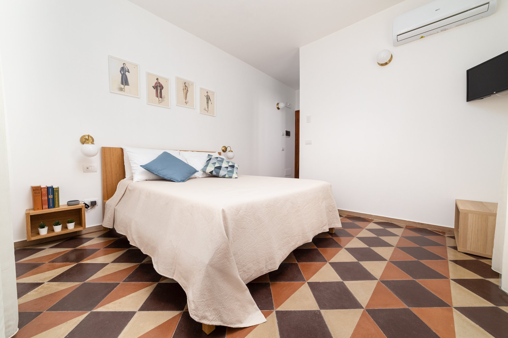
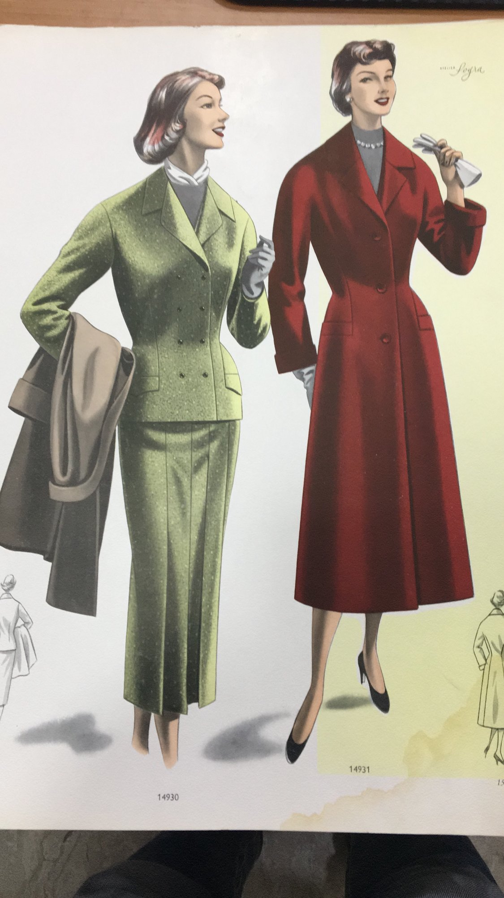
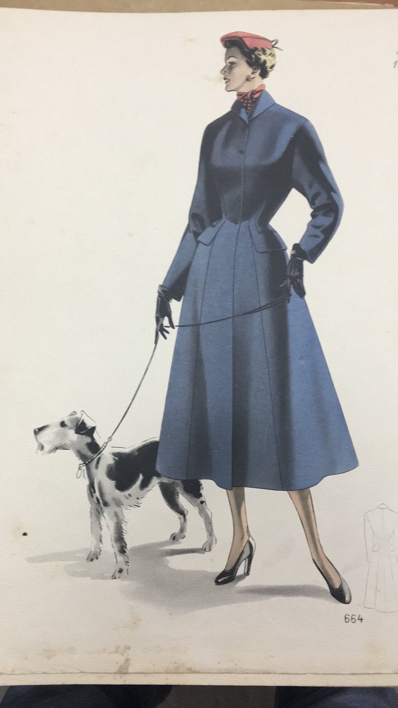
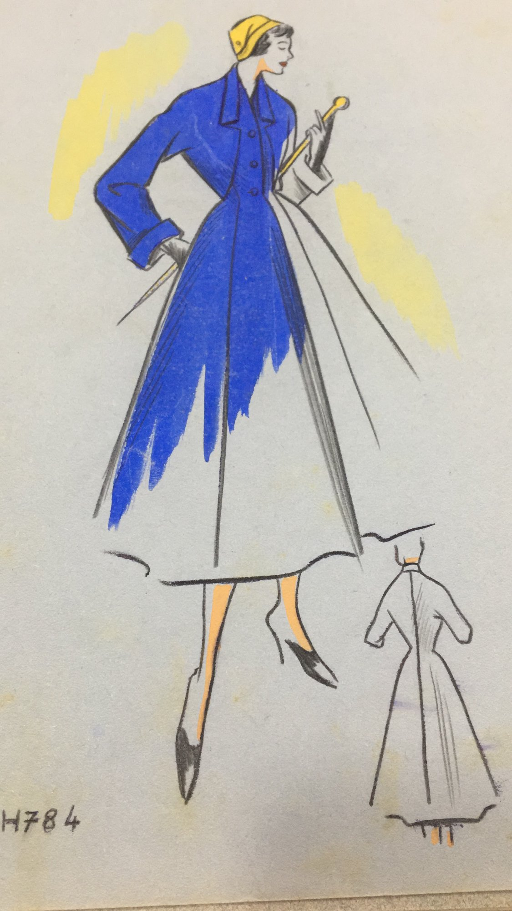
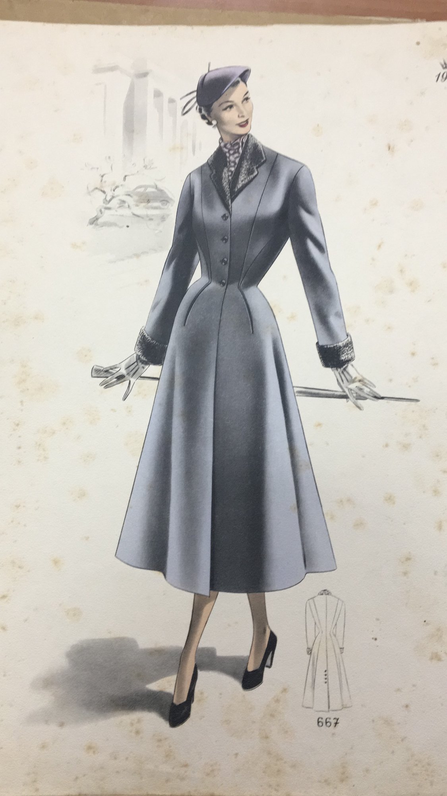

Nel cuore del centro storico di Bitonto, a 20 minuti da Bari. Tre camere indipendenti con accesso autonomo, in un vicolo medievale unico.



Santalò è un B&B ricavato in un palazzo storico nel cuore del centro antico di Bitonto, la città dell'olio DOP pugliese.
Tre camere indipendenti su piani diversi, ognuna con accesso autonomo tramite codice o key box. Nessun orario di reception, massima libertà.
A pochi passi dalla Cattedrale romanica del XII secolo, da piazza Cavour e dai migliori ristoranti della città. A 20 minuti da Bari e dal mare.
L'anno è visibile ancora oggi sulla facciata principale. È il momento in cui questo palazzo prende forma nel quartiere più antico di Bitonto, in quello che i bitontini chiamavano «dreit a Sandalou» — proprio qui, accanto all'ex chiesa di Sant'Eligio. Un palazzo borghese, solido, con i pavimenti in cotto che ancora oggi scricchiolano sotto i piedi come allora.
Il primo proprietario era un sarto. Riceveva bozzetti di moda — quelli che trovi oggi incorniciati nelle camere, recuperati e restaurati da URSI Galleria — e cuciva i prototipi. Li spediva a Parigi. È da questi bozzetti, datati 1954 e 1956, che le nostre camere prendono il nome. Una storia di artigianato, eleganza e scambio tra la Puglia e la capitale della moda.
In dialetto bitontino si diceva «dreit a Sandalou» per indicare questo luogo. Sandalou è la storpiatura dialettale di Sant'Alò — cioè Sant'Eligio, il cui nome in francese medievale era Alò. Qui sorgeva la chiesa di Sant'Eligio, consacrata nel 1299 e oggi inglobata nel palazzo. Il santo francese dell'oreficeria, dei cavalli e dei fabbri — venerato a Bitonto dal XIII al XVII secolo — è ancora qui, nel nome del vicolo e nel nome del B&B.
Ognuna porta il nome dell'anno in cui è stato costruito il palazzo.





Centro storico medievale, a 20 minuti da Bari e dall'aeroporto, vicino a Castel del Monte, Polignano e Alberobello.
Scrivici su WhatsApp per disponibilità e prezzi. Risposta garantita entro poche ore.